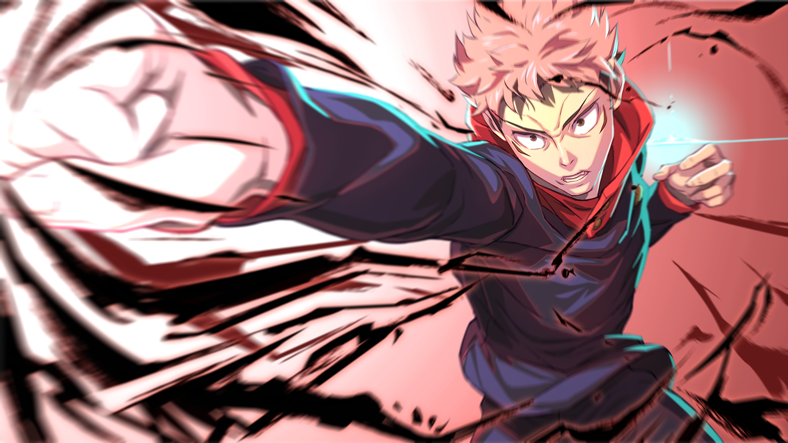
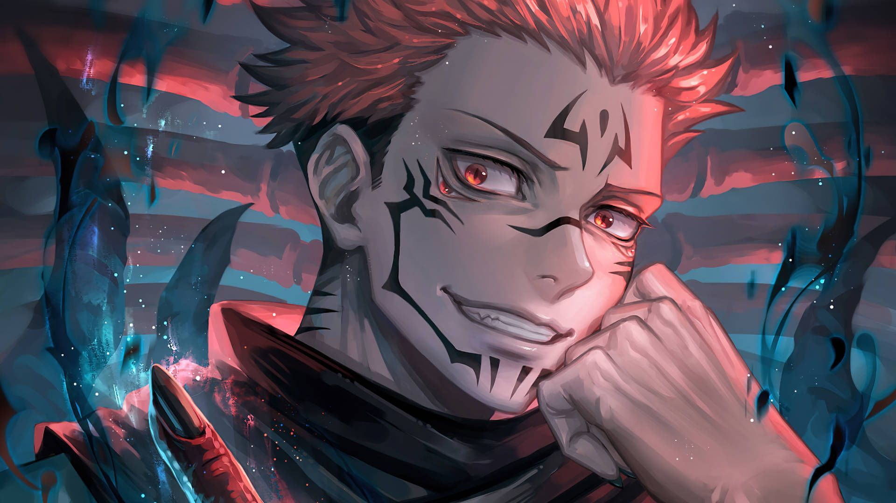
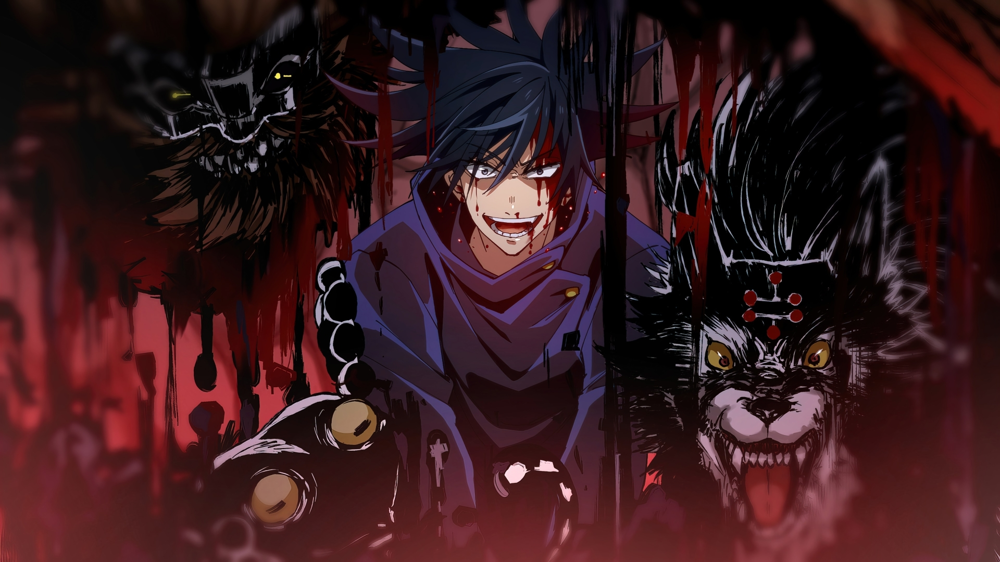
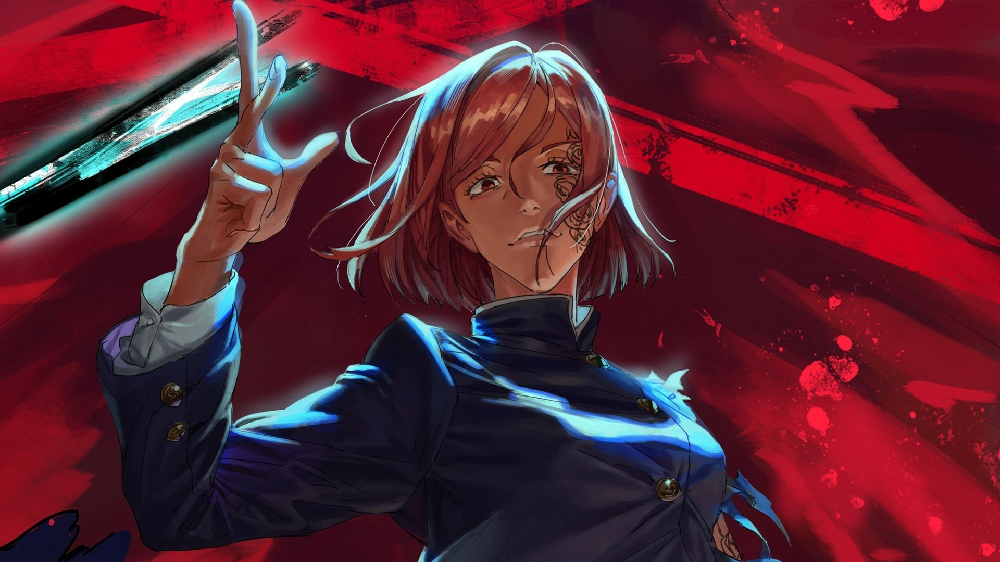
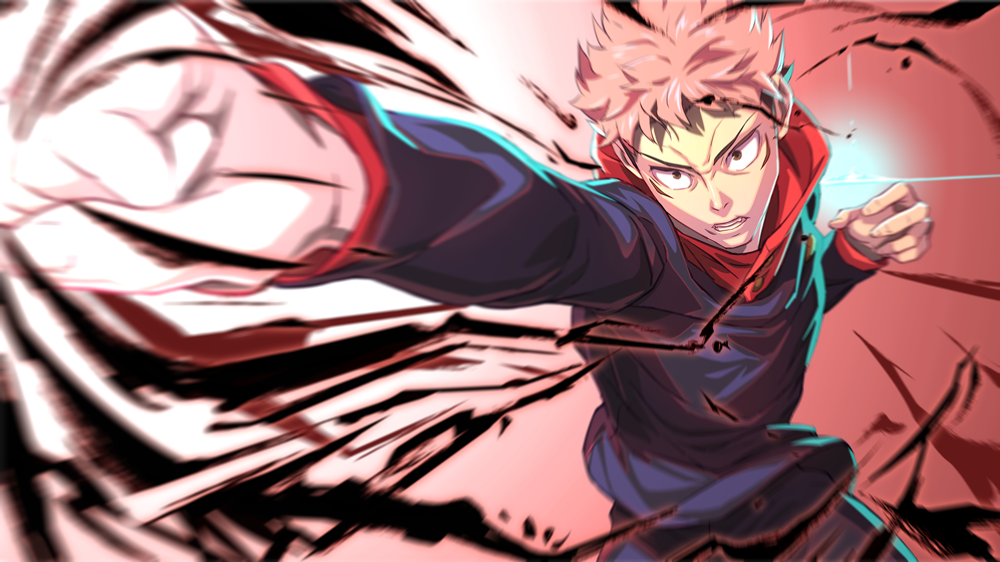
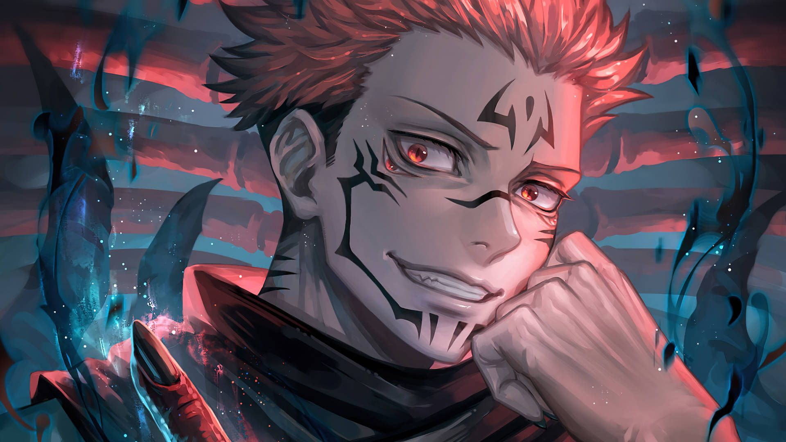
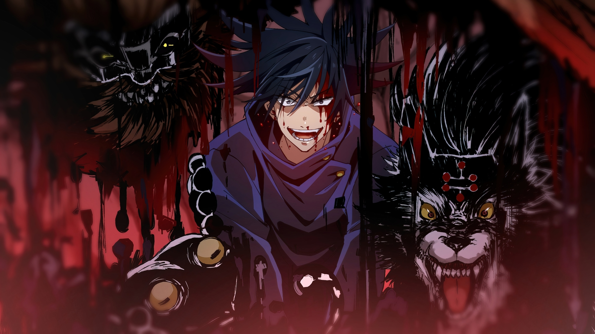
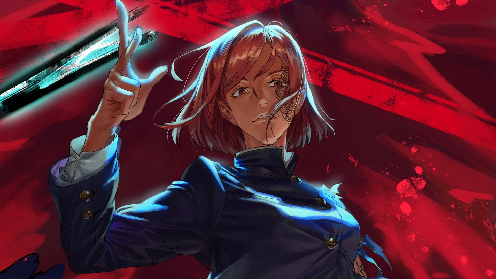

Satoro gojo
Satoro gojo é o feiticero mais forte da hera moderna. Sua tecnica é o vazio ilimitado, ele tem o mugem que sempara ele da realidade, tornado ele intocavel. Alem de ser um belo feiticero ele tem uma expansão de Dominio chamada Muryōkūsh, que envia milhares de informações pra sua mente deixando vc paralizado. ele tambem pode juntar suas duas tecnicas, azul e vermelho assim fazendo o vazio roxo. uma tecnica que elimina toda materia existente que estiver no caminho, suas outras duas tecnicas são o vermelho que é atrair e azul que é repelir.
Yuji Itadori
Yuji Itadori é um feiticero que não tem nenhua tecnica amaldiçuada, ele tem o objetivo de coletar e conssumir os dedos de sukuna pra eliminalo depoi de consumir todos os dedos. Yuji bem enpogado no começo, não sabia que sua jornada seria muito dolorasa.
Sukuna
Sukuna é um feiticero dá hera heian, que fez votos para virar um objeto amaldiçoado e reencarna no futuro, suas tecnica é de cortes e fogo, se objetivo é enfrentar um oponente forte o bastante que fassa ele usar todo seu poder. Sua expansão de Dominio se chama Fukuma Mizushi ela lança cortes pra todos os lados deixando tudo em pó.
Megumi fushiguro
Megumi fushiguro é um feiticero da escola jujutso, sua tecnica permite invocar dez shikigami deifernte e cada um tem uma abilidade diferente, seu shikigami mais poderoso é o mahoraga ele pode se adapitar a qualquer situação, e uma vez adapitado já era. sua expansão se chama jardin das sonbras, ele inunda a área com inumeras sonbras fluidas.
Nobara kugisaki
Nobara kugisaki é uma feiticera da escola jujutso, sua tecnica é boneca de palha, com um pedaço do corpo da maldição ou um fio de cabelo, ela pode eliminalo a longa distansia jogando o boneco em cima. Ela não tem uma expansão mais tem um belo rosto kkkkkk.